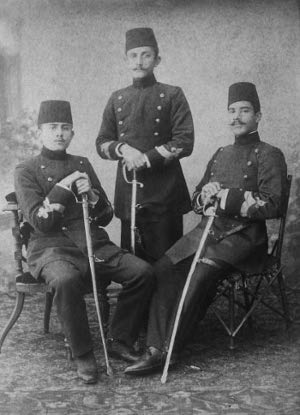

Cahil bir hükümdar; cinayetlerindeki muvaffakıyetleriyle milleti tamamıyla sindirdikten ve Yunanistan’a karşı ordunun kazandığı zaferle de avamın muhabbetini kazandıktan sonra artık neler yapmazdı!..
Kuleli Askeri İdadisi (Lise), Pangaltı Harbiyesi ve yine Pangaltı Erkân-ı Harbiye Mektebi (Akademi) ki her biri üçer yıldan ceman dokuz yıl gittikçe artan bir baskı altında ezile ezile erkân-ı harp yüzbaşısı çıktık. Bütün cihan baş döndürücü bir hızla terakki âleminde yol alırken Sultan Hamid’in vehmiyle Türk milleti her yenilikten, her terakkiden geri kaldı. Gerçi ordunun ıslahı için bazı Alman muallimler getirtiliyor ve bazı yeni silahlar alınıyordu. Fakat bunlar da serbest bırakılmıyor, cahil ve mütereddi hafiyelerin bir düziye nezaretleri altında jurnal ediliyor ve her şey felce uğruyordu. Hayatım başlıklı eserimde mektep hayatımca gördüklerimi günü gününe kaydetmiş olduğumdan burada kısaca şunları yazmak kâfidir:
Vatan ve millet kelimelerini söylemek ve yazmak yasaktır. Dinlemezseniz mahvınıza kâfi bir sebeptir. Bunu bize Kuleli’de kitabet imtihanında zabit hocalarımız şöyle ihtar etmişlerdi: Patrie ve Nation kelimelerinin Türkçelerini katiyen yazmayacaksınız! Mesul olursunuz!
“Murat” demek yasaktı, “Mir’at” denirdi. “Hamid” yerine de “Hâmid”, “Yıldız” yerine de “Yaldız” kullanılırdı.
Bir istida, bir eser muhakkak padişaha dua ile başlayacaktır. “Velinimet-i biminnetimiz” diyerek her şeyi “saye-i şahanesine” bırakacaksınız. Aksi takdirde başınıza her bela gelebilir.
Gazete ve kitaplar neşrinden önce sansüre tabi tutulur. Zararlı şeylere bakılır. Mesela 1318 Mayıs’ında Çemberlitaş Hamamı külhanında 150 çuval kitap ve evrak yakıldı.[10]
Akşamları bütün ordu ve askeri mektepler üç defa “Padişahım çok yaşa!” diye haykıracak, eğer can ve gönülden bağırmıyor diye jurnal edilirseniz başınıza bir bela gelir.
Miralay rütbesine kadar zadegân sınıf arkadaşlarınız vardır. Sınıfın ilerisinde misiniz, bunlara ders öğretmeye de mecbur kalırsınız, içlerinde korkunç şirretleri de vardır. Mülazım, yüzbaşı rütbesindeki sınıf zabitleri ve muallimler bile bunların şerrinden korkarlar. Mesela Kuleli’de ahlaksızlığından dolayı mektepten kaydı silinen Ebülhüda namındaki padişahın bir mutemet mensubunu az sonra biz Beyoğlu’nda cuma selamlık alayından arabaya kurulmuş bir halde dönerken gördük: Göğsü, kolları sırmalar içinde idi. On yedi yaşındaki bu yakışıklı genç rütbe-i bâlâ ricalinden olmuş!... Yine kendisi gibi olan arkadaşı da hünkâr yaveri üniformasıyla saray atlarından biri üzerinde bir yere irade tebliğine gidiyordu!
Bir gün Fransızcadan tercüme ettiğim ve bir çocuk mecmuasının bastığı “Kral ve Çoban” makalesi az kaldı felâketime sebep oluyordu. Bir daha neşirden men edildim.
Harbiye Mektebi’nde muhafız kıta neferleri mavzerli idi. Talebeye ise köhneleşmiş martin tüfekleri ve ağır kasaturalar taşıtılıyordu. Bir gün Kâğıthane Poligonu yanından geçerken bir arkadaş boş bir şarapnel kovanı bularak mektebe getirmişti. Az kaldı istikbali mahvolacaktı. Abdesthaneye attırarak çocuğu kurtardım.
Zabit çıktığımız yıl (1902/1318) Direklerarası’nda kardeşimi tevkif ederek Bekirağa Hapishanesi’ne götürdüler. Meğerse birkaç gün sonra padişah Hırka-i Şerif’e gidecekmiş, yeni zabitler ortada dolaşmasın denilmiş. Ne kadar yeni zabit varsa hepsini tevkif etmişler. Kardeşim de bu arada muhafaza altında İstanbul’dan çıkarıldı.

Harbiye son sınıfta.
Kâzım Zeyrek (Karabekir), Hulusi Zeyrek (Karabekir), Seyfi Firuzağa (Düzgören)
Teyzemin oğlu Bahriye Zabiti Mehmet Kaptan’ın kayınbiraderi Rıza Kaptan Yeniköy’de bir ecnebi ahbabının evine girerken jurnal edilmiş, bir yıl kendi, üç ay da eniştesi diye Mehmet Kaptan hapiste yattılar. Bereket versin eskiden bir arada otururken hayli zamandır ayrı evlerde ve birbirimizden uzaktık.
Erkân sınıflarında artık kafalarımız da olgunlaşmış, mühim bazı hadiseler de vukua gelmiş, baskı da pek ziyadeleşmiş olduğundan tahsilimiz daha tehlike içinde geçti. Almanlardan askeri dersleri görüyor ve yeni silahları öğreniyorduk fakat bir telefon, bir otomobil vesair elektrikli vasıtaları hep nazari okuyorduk. Hatta bir top bile bize gösterilmiyordu. Jurnalcilik ise rekabet edilircesine artmıştı. Biz zabit üniformalı erkân-ı harp sınıflarına tıpkı Harbiye talebesi gibi muamele ediliyordu. Maaş yılda ancak üç dört aylığa inmişti. Haftalık namıyla maaşın dörtte biri ayda, bazen daha uzun zamanda verilirdi. Bütçe açığı ordu ve memurların ve mütekait ve yetimlerin maaşından kapatılırdı.[11] Fakat mensuplar ve işini uyduranlar maaşlarını kâmilen alırlardı.
Fakat hafiye teşkilatı, saray muhafızları, saray mensupları gittikçe artıyor ve bunlar muntazam maaşlarından başka sadakat göstermeleri derecesine göre ikramlar, ihsanlar, rütbeler, köşkler ve konaklar ihsan alıyorlardı. Paşa rütbesinde hafiyeler de vardı. Bunların konakları küçük birer saray halini almıştı. Muhafızların başlarındakiler en cahil fakat en kuvvetli adamlardı. Mesela Müşir Tahir Paşa, Arnavut kayıkçı, sonra da kaldırımcı idi, imzasını atamazdı. Kendisi gibi güçlü kuvvetli kayıkçılar, kaldırımcılar, hamallar Sultan Hamid’in, muhafız kıtalarının kumanda heyetini teşkil ediyordu. Bu muhafızlara tüfekçiler deniyordu. Neferleri bile ayda 10-25 liraya kadar maaş alıyorlardı. İçlerinde Türk’ü pek az olan Arap, Rum mühtedisi, Arnavut vesaireden mürekkep mabeyncilerin en az maaşı yüz altındı. Haremağalarının hayli masrafı vardı. Kızlarağası her masrafı ayrıca tesviye olunur ve ayrıca ayda 300 altın alırdı. Payesi de sadrazam hizasında fakat nüfuzu daha ziyade idi. Padişah bütçenin şu faslı, bu faslı tanımazdı. İstediği yere istediğini verirdi ve aklına geleni de masrafa bakmayarak yaptırırdı. Mesela Yıldız’da mükemmel bir tiyatro vardı. Her taraftan gelen ecnebi artistler huzurda oynarlar ve nişanlar ve ihsanlar alırlardı. Hamid’in bazı kaprisleri de vardı. Bunun için Yıldız’da marangozhane, çini fabrikası kurdurmuştu. Ecnebi ustalara bol para verdirirdi. Nişan faslı da çok israflara sebep oluyordu. Sarayda müneccimbaşı, seccadecibaşı... namlarıyla birçok başlar da vardı. Sultan Hamid’in rüyalarının tabircileri de vardı. Büyük satın almalarda Sultan Hamid’in en yakınları en büyük hırsızlığı yaparlardı. Bunun adı ancak suistimal olabilirdi ve ortaya çıksa da sadık kullarından kimse ceza görmezdi. Çünkü bir padişaha dua, olmazsa mabeyn kapısında köpek gibi havlama, cezası af şöyle dursun üstelik ihsan-ı şahane veya rütbe, nişan da verilmesini mucip olurdu. Muhtar Paşa derste bize mavzer tüfeklerinin üçer buçuk altına alındığını halbuki Japonların aynı tüfeği ikişer buçuk altına aldıklarını ve sebebinin de Japonların gönderdikleri heyetler ne ziyafet ve ne de en ufak bir hediye kabul etmezlerdi. Bu hususa dair kâfi emir alırlar ve yemin veriyorlarmış. Bizimkiler ise envai ziyafetleri ve adı hatıra olan hediyeleri ve apaçık zarf içinde gönderilen parayı bile kabul ediyorlarmış.
Sultan Hamid cahil ve haylaz olduğu halde[12] kendini ecnebi gazetelerine meth ettirmek için pek çok para sarf ederdi. Muntazam olarak Brüksel’de Orient gazetesi ve ara sıra bazı kitaplarda bol para mukabilinde meddahlık yaparlardı.
Hükümet ve ordunun idaresi için Babıâli ve Seraskerlik makamlarından başka Yıldız Sarayı’nda da padişahın emrinde birtakım teşekküller vardı. Bunlara da birçok muhassasat ve ihsanlar verilirdi. Mesela Teftiş-i Askerî Komisyonu 44 daimi aza ve 6 fahri azadan mürekkepti. Yaver-i ekremlerin sayısı 275’ti. Bunların 6’sı müşir, 10’u birinci ferik, 32’si ferik, 200’ü ümera ve zabit. Fahri yaverlerin sayısı 40’tı. Bunların 4’ü müşir, 7’si birinci ferik, 29’u ferik, 9’u mirliva, 40’ı ümera ve zabit.
Sarayda 40 aşçı ve bunun üç misli yamak var. Her gün sabah akşam 600 tabla yemek çıkıyor ve sarayın içinden başka Beşiktaş’ta birçok emektarların evine de tablalarla yemek gidiyor.
Hamid’in sadık bendelerinin ve hafiyelerinin etrafları da birer saray âleminin gittikçe küçülen bir örneği! Bu suretle birkaç bin kişinin refah ve israf içinde yaşamasına karşılık bütün Türk milleti ve ordusu gittikçe sıkıntıya düşüyor ve halk fakirleşiyordu. Hükümete ve hatta mahkemelere düşenlerin vay haline idi. İşler sürüncemede bırakılıyor, rüşvetle iş görülüyor ve halka iyi muamele olunmuyor, onlara hakaret olunuyordu. Sanki onlar müstemleke halkı idi. Zavallı halk Hint fakirleri gibi göbeğine bakıyordu ve Allah kimseyi hükümet kapısına ve mahkemelerine düşürmesin diye dua ediyorlardı. Gayr-i Türkler daha mesuttu, askere gitmiyorlar ve büyük devletlerin himayesine mazhar olduklarından boyuna çocuk yapıyorlar ve zengin de oluyorlardı. Avrupalılar, “Türkler adam olmazlar!” diyorlar ve Hıristiyan unsurun terakkisine her cihetten yardım ediyorlardı. Büyük devletler aralarında bir harp çıkmasına sebep olmadan “Hasta Adam” dedikleri Türklerin mirasını paylaşma planını çiziyorlardı.
Türklerde de, “Artık biz adam olmayız!” kanaati uyanmıştı. Çünkü yukarıdaki acıklı hallerden başka maneviyatı kıracak daha çok şeyler vardı. Mesela ordu gittikçe fenalaşıyordu, Balkan devletleri bile ordularını gençleştiriyor ve yenileştiriyordu. Türk ordusu ise ihtiyar ve beceriksiz kumandanlar idaresinde bırakılmış, manevra nedir bilmiyorlardı. Hatta atış talimleri bile yapılmıyordu. erkân-ı harbiye heyeti masa başlarında çalışıyorlardı. Zabitanın çoğu alaylı idi. Hele asker vermeyen İstanbul’daki Hassa Ordusu’nun kadrosundan çok fazla paşaları ve zabitleri bir sürü cahil kimselerdi. Bu kıtalarda lüzumundan çok fazla küçük zabit de bulunuyordu. Sarayda padişahı avucu içinde tutan birtakım şüpheli adamlar da vardı. Bunlar başka devletler hesabına Türk milletini padişahları eliyle, istismar ediyorlardı. Mesela Arap İzzet 1311 nihayetlerinde (1895) Ebülhüda’nın tavassutuyla saraya girmişti. Beyrut’ta Cizvit mektebinden çıkmış bir cingözdü.[13] Daha evvel Hamid’e çatan hamisi de aynı fasileden biriydi. Bunların oğulları, yeğenleri, mensupları... bir sürü iki para etmezler zadegân sınıfından sayılırlar ve Türk vezirleriyle bir hizaya girerlerdi. Bu güruhun aldığı Türk altınları ile Anadolu’da modern yüzlerce Türk köyü yapılabilirdi.
Bir taraftan da Yahudiler verilmeyen maaşları kırarak rüşvet yedirip tahsiline imkân buluyorlar ve ahlakı büsbütün tereddi ettiriyorlardı. Türk benliği gün geçtikçe eriyordu. Daha bu kabil fenalıklarıyla milletinin gözünden düşen Sultan Hamid; kendini Arap ve Arnavutlardan mürekkep sarıklı ve fesli Zuhaf Alayları ile ve tüfekçilerle muhafaza ettiriyor ve ayrıca Yıldız’ı bir sürü cahil zabitlerin kumandasındaki İkinci Fırka ile de bekletiyordu.
Türk ordusu bu haliyle dış tehlikeleri karşılayacak kudrette olmak şöyle dursun iyi ellere verilmiş olsa dahi uzun zamanlar bu kudreti kazanamayacaktı. Sınıfça Tophane’yi ziyaretimizde Karadeniz Boğazı için yıllarca evvel satın alınıp getirtilen uzun 24 santimetrelik topları bir çardak altında ve yerde gördük. Sebebi Rusya bunların Boğaz’a konmasını dostluk nişanesi bulmadığını Sultan Hamid’e söyletmiş!... Tophane ecnebi ustalar elinde ve iptidai bir halde... Hülasa devletin mülki ve askeri teşkilatı sultanın vehmi ve bilgisizliği ve ecnebilerin tesiri altında gittikçe fenalaşıyor.